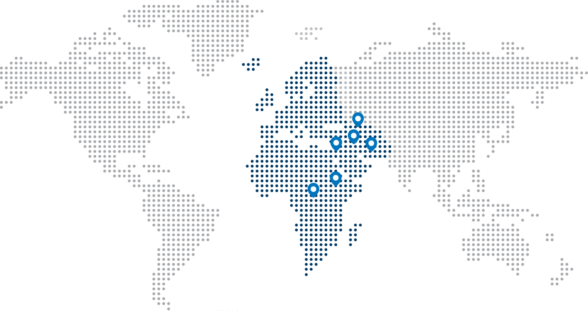

Toggle Finance is a B2B buy now, pay later solution that aims to improve the efficiency and security of transactions between suppliers and buyers.
It allows suppliers to extend credit to buyers and buyers to purchase goods and services without upfront payments.
The company's mission is to make cross-border trade more efficient, sustainable, and fair for all parties involved. Using Toggle Finance can help businesses streamline their B2B BNPL and strengthen their supply chain connections.
Toggle Finance allows suppliers to offer credit to buyers, so that buyers can purchase goods and services without having to make upfront payments. Instead, buyers can make payments over time, which helps to manage cash flow and reduce the risk of non-payment.
The platform also provides a secure and efficient way for buyers and suppliers to conduct transactions, including the exchange of invoices, shipping documents, and other important information.
Additionally, the platform offer other services such as currency conversion, trade financing, and logistics support, to make cross-border trade more convenient and streamlined..
Please be advised that Toggle is currently in the process of scaling its operations.
At this time, our B2B cross-border trade coverage for buyers is limited to
Rwanda, Kenya, Jordan, UAE, Saudi Arabia, and Kuwait.
We are actively working to expand our network across the EMEA region and appreciate your patience as we do so.
